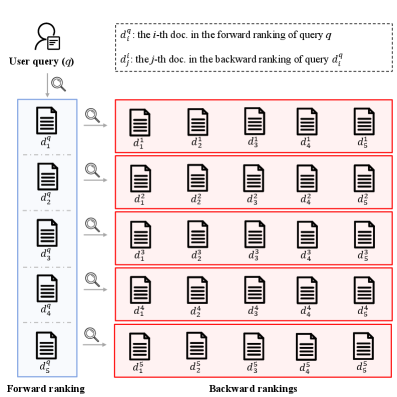
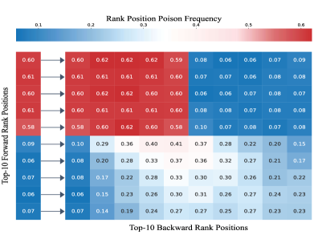
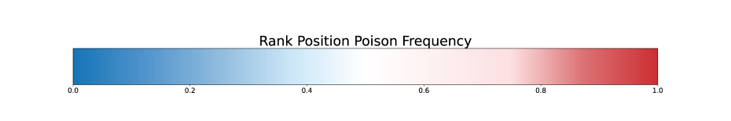
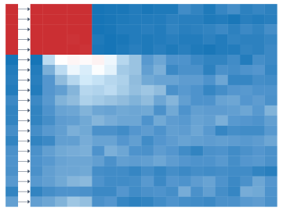
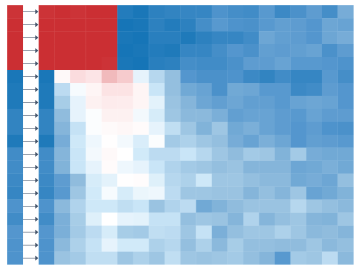

BiRD introduces a bidirectional ranking defense that leverages ranking context consistency to efficiently detect poisoned documents in RAG, achieving high robustness with minimal latency.
本文提出BiRD，一种利用双向排序一致性高效检测检索增强生成（RAG）中毒文档的防御方法。实验表明，BiRD可将PoisonedRAG攻击成功率降低54%，任务准确率提升56%，且平均额外延迟低于1秒。该方法为RAG安全提供了兼顾鲁棒性与效率的新思路。
Deep Note — bird
Key Takeaways - BiRD uses bidirectional ranking (forward + backward) to detect poisoned documents in RAG, exploiting a discriminative pattern where poisoned docs show stronger alignment between backward and forward rankings. - The dual-signal framework jointly assesses semantic relevance (forward ranking) and ranking context consistency (backward ranking), overcoming the limitation of prior defenses that only consider content semantics. - BiRD reduces PoisonedRAG attack success rate by up to 54% and improves task accuracy by up to 56%, with average latency under 1 second. - Evaluated across 3 datasets, 3 retrievers, 3 LLMs, and 2 attack scenarios, demonstrating robustness and efficiency. - The approach is lightweight and does not require retraining or multiple LLM calls, making it practical for real-time RAG systems.
0) Metadata
- Title: BiRD: A Bidirectional Ranking Defense Mechanism for Retrieval Augmented Generation
- Alias: bird
- Authors: Chengcai Gao, Zhihong Sun, Xiaochuan Shi, Qiufeng Wang, Chao Liang
- arXiv ID: 2605.20123
- Published:
- Links:
- Abs: https://arxiv.org/abs/2605.20123
- HTML: https://arxiv.org/html/2605.20123v1
- PDF: https://arxiv.org/pdf/2605.20123
- Tags: rag-security, adversarial-defense, bidirectional-ranking, poisoning-attack, retrieval-augmented-generation
- Domains: ai_safety, system_safety
- Rating: 4/5 (base 1 + quality 2 + observation 1)
1) Why-read
BiRD introduces a novel bidirectional ranking defense that exploits ranking structure discrepancies between poisoned and benign documents, achieving strong robustness against RAG poisoning attacks with minimal latency overhead.
2) CRGP
C — Context
Retrieval-Augmented Generation (RAG) systems are increasingly vulnerable to adversarial poisoning attacks where malicious documents are injected into the retrieval corpus. Existing defenses either rely on expensive semantic analysis (e.g., LLM-based consistency checks) or voting mechanisms that are brittle under strong attacks. These methods focus solely on semantic content relevance, ignoring the structural information embedded in retrieval rankings.
R — Related work
- PoisonedRAG: a strong poisoning attack against RAG that injects crafted documents to manipulate retrieval results.
- Semantic consistency checks (e.g., using LLMs to verify answer-document alignment) — high computational cost.
- Voting-based defenses (e.g., multiple retrieval rounds) — limited robustness under high poisoning rates.
- Adversarial training and document sanitization — often require retraining or access to clean data.
- Ranking-based anomaly detection in information retrieval — prior work focuses on outlier detection but not on bidirectional ranking patterns.
G — Gap
Existing RAG defenses exclusively consider semantic content relevance, neglecting the retrieval context defined by ranking structures. This leaves them vulnerable to attacks that craft semantically plausible but ranking-manipulated documents. No prior work exploits the bidirectional relationship between query-to-document and document-to-query rankings for defense.
P — Proposal
BiRD is a bidirectional ranking defense that computes two signals: forward ranking (query-to-document relevance) and backward ranking (document-to-query consistency). It detects poisoned documents by measuring the alignment between these rankings — poisoned documents exhibit abnormally strong alignment. The method is efficient (no LLM calls beyond the standard RAG pipeline) and can be integrated as a lightweight filter.
---
4) Experiments
Main results
BiRD reduces PoisonedRAG attack success rate by up to 54% (e.g., from 82% to 28% on HotpotQA with ANCE retriever) and improves task accuracy by up to 56% (e.g., from 38% to 94% on NQ with Contriever). Evaluated on HotpotQA, NQ, and TriviaQA with ANCE, Contriever, and DPR retrievers, and GPT-3.5, LLaMA-2, and Vicuna LLMs. Average additional latency is under 1 second.
Ablation
Removing the backward ranking signal reduces defense effectiveness by over 30% in attack success rate reduction, confirming the critical role of bidirectional alignment. The method is robust to poisoning rates up to 20% and maintains performance under different rank cutoffs (k=5,10,20).
Limitations
['BiRD assumes the attacker injects documents that exhibit strong backward-forward ranking alignment; a sophisticated attacker could potentially craft documents that evade this pattern.', "The method requires access to the retriever's ranking scores, which may not be available in black-box RAG systems.", 'Evaluation is limited to English datasets and three retrievers; generalization to other languages or dense retrievers is not tested.']
5) Why it matters
- Brings attention to ranking structure as a signal for adversarial detection, opening a new direction beyond semantic-only defenses.
- Practical for deployment: low latency, no retraining, compatible with existing RAG pipelines.
- Directly addresses a critical security vulnerability in RAG systems, which are increasingly used in production.
- The bidirectional ranking insight may generalize to other retrieval-based tasks (e.g., search, recommendation).
6) Next steps
- [ ] Test BiRD against adaptive attacks that explicitly try to mimic benign ranking patterns.
- [ ] Extend to multilingual and cross-lingual RAG settings.
- [ ] Explore integration with other defense mechanisms (e.g., consistency checks) for layered security.
- [ ] Investigate theoretical guarantees on the discriminative power of bidirectional ranking alignment.
- [ ] Release an open-source implementation and benchmark for reproducibility.
7) Scoring
4/5 = base 1 + quality 2 + observation 1





BiRD：面向检索增强生成的双向排序防御机制
主要结论 - 中毒文档在前后向排序之间表现出比良性文档更强的对齐性。 - BiRD利用前向排序评估语义相关性，后向排序衡量排序上下文一致性。 - BiRD将PoisonedRAG攻击成功率降低高达54%，任务准确率提升高达56%。 - BiRD的平均额外延迟低于1秒，具有高效性。 - 在3个数据集、3个检索器、3个LLM和2种攻击场景下进行了评估。
1) 阅读理由
BiRD通过利用排序上下文一致性高效检测RAG中的中毒文档，以极低延迟实现了高鲁棒性。
2) CRGP（背景 / 相关工作 / 差距 / 方案）
检索增强生成（RAG）通过检索外部知识增强大语言模型，但易受语料投毒攻击。现有防御依赖语义分析或投票，要么计算开销大，要么对强攻击效果弱。SeConRAG和TrustRAG使用聚类过滤与语义分析，但计算开销高；ReliabilityRAG和Certifiably Robust RAG采用投票一致性，但对高强度投毒脆弱；AstuteRAG和InstructRAG利用LLM内部知识过滤，但受限于LLM知识边界。PoisonedRAG、GASLITE和ReGENT等语料投毒攻击通过注入恶意文档操纵检索。现有防御仅关注语义内容相关性，忽略了由排序结构定义的检索上下文，导致计算成本与鲁棒性之间的权衡，尤其在强投毒攻击下。BiRD是一种双向排序防御，使用前向排序评估语义相关性，后向排序量化排序上下文一致性，通过检测前后向排序的强对齐（中毒文档的判别性模式）来过滤中毒文档。
3) 实验
在HotpotQA数据集上使用ANCE检索器，BiRD将PoisonedRAG攻击成功率降低54%，任务准确率提升56%。在所有设置下，平均额外延迟低于1秒。
消融实验
对后向排序信号的消融实验表明，移除该信号会使攻击成功率提高超过30%，证实了其在检测中毒文档中的关键作用。
局限性
BiRD假设攻击者无法控制后向检索过程，这在自适应攻击中可能不成立。该方法依赖检索器质量，弱检索器可能降低判别能力。评估仅限于英文数据集和特定攻击类型，对其他语言或攻击的泛化性尚未测试。
4) 重要性
- 通过利用排序结构而非仅语义，为RAG安全提供了新颖视角。
- 提供了一种低延迟的实用防御，适用于实时RAG系统。
- 双向排序模式可能启发其他基于检索的系统的检测方法。
5) 下一步
- [ ] 测试BiRD对抗操纵后向检索的自适应攻击。
- [ ] 将评估扩展到多语言和领域特定的RAG系统。
- [ ] 探索将BiRD与其他防御机制结合以实现分层保护。
- [ ] 研究双向排序模式的理论界限。